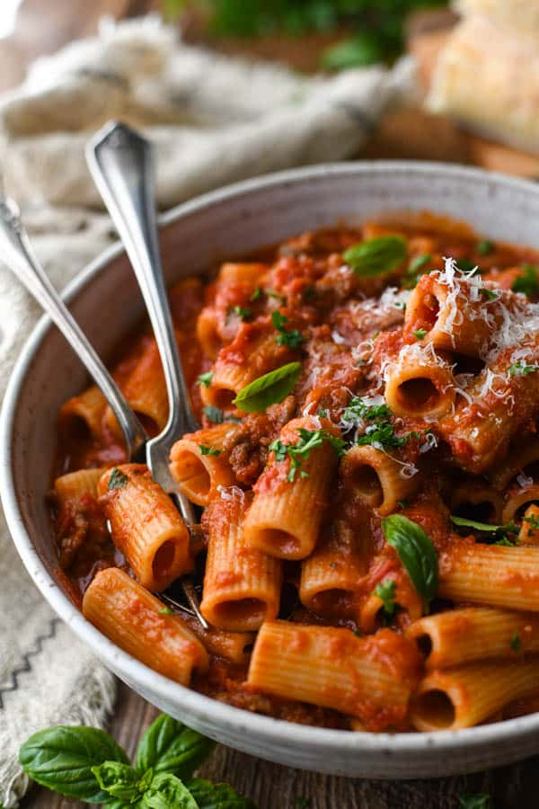

Pasta with Italian sausage!

Description:
A most delectable pasta, and easy to construct as well.
Ingredients:
- 1 pound italian sausage links
- 1/2 pound lean ground beef
- 1 tablespoon olive oil
- 1 onion, chopped
- 1 clove garlic, chopped
- 1(16 ounce) can canned tomatoes
- 1(15 ounce) can canned tomato sauce
- 1 teaspoon salt
- 1/4 teaspoon ground black pepper
- 1 teaspoon dried basil
- 1 teaspoon dried oregano
- 1 bay leaf
Steps:
- Removed casing from sausage links and cut into 1/2 inch slices. In a large skillet, brown sausage over medium heat for about 10 minutes; remove and set aside.
- In a large skillet, heat ground beef, olive oil, garlic and onion over medium heat until meat is nicely browned; drain.
- Pour in tomatoes and tomato sauce; mix in salt, ground black pepper, basil, oregano, bay leaf and cooked sausage. Simmer uncovered for 1 hour, stirring occasionally.
- Bring a large pot of lightly salted water to a boil. Add pasta and cook for 8 to 10 minutes or until al dente; drain.
- Mix cooked sauce with hot pasta and remove bay leaf from sauce before serving.
Nutrition Facts:
Per Serving
- 339 calories
- 18.5g protein
- 11.4g carbohydrates
- 24.6g fat
- 58.1mg cholesterol
- 1517.8mg sodium!